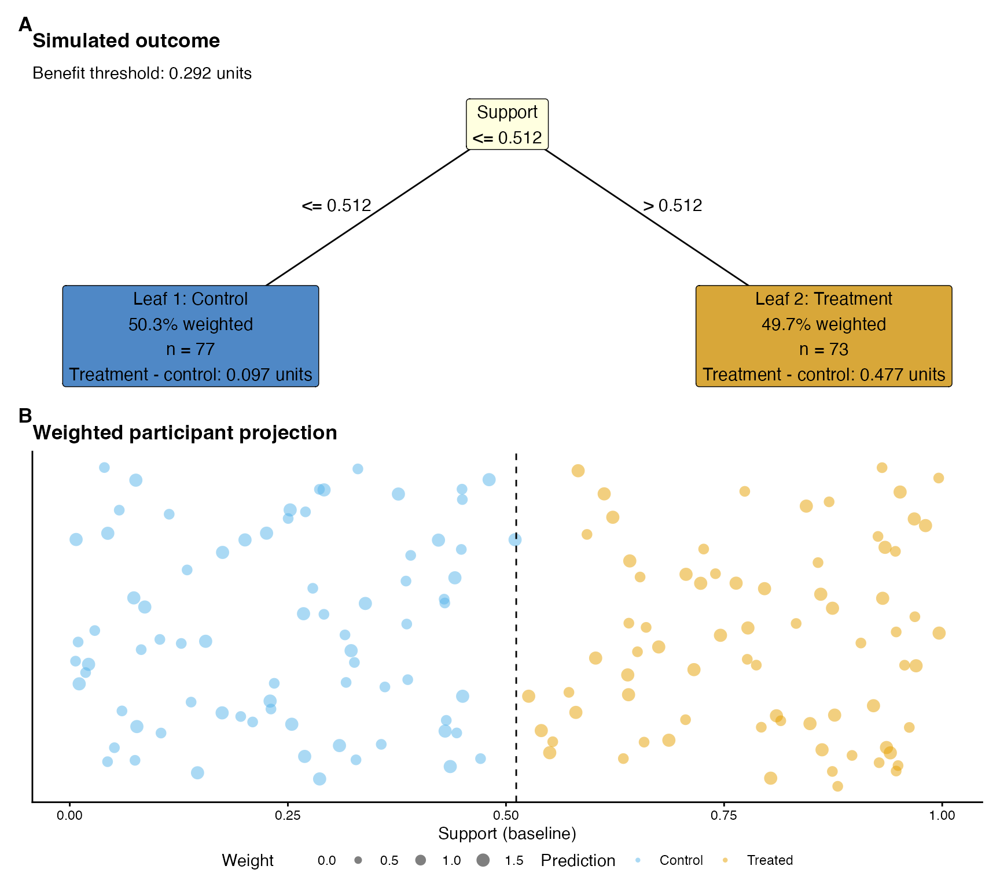
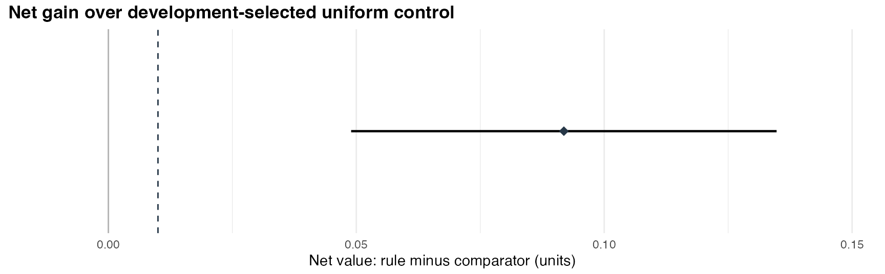

Interpretable policy trees with benefit thresholds
Source:vignettes/policy-value-thresholds.Rmd
policy-value-thresholds.RmdTreatment can benefit everyone while benefiting some groups more than others. A policy tree optimising the outcome alone can then assign treatment throughout the population. A benefit threshold makes the magnitude of the expected benefit relevant to allocation. This article develops a shallow rule under an explicit threshold, evaluates the unchanged rule on independent participants, and reports its original effects alongside its net value.
Set the benefit threshold before evaluation
Let the benefit threshold be , expressed in outcome units where larger values are preferred. Under additive costs and linear outcome valuation, an incremental treatment cost and a value per outcome unit give . Net value subtracts for each person assigned treatment. The comparison between a policy tree and a constant assignment must apply the same threshold to both rules.
An ATE-referenced benefit threshold uses the development-sample estimate of the average treatment effect (ATE) as a hypothetical cost equivalent. This reference asks which interpretable groups warrant treatment relative to the development average. Its interpretation is a relative-effect allocation question; economic valuation would require justified costs and outcome values. A zero or negative estimated ATE remains a signed reference; describing it as a positive treatment expense would change its meaning.
The threshold and the gain margin have different roles. The threshold adjusts benefit per treatment recipient. The gain margin specifies a population-average improvement over a comparator. Here we use the development ATE as the threshold and an illustrative gain margin of 0.01 outcome units. The margin accompanies the evaluation result.
Simulate development and evaluation participants
Our example simulates 500 independent participants with baseline support and age, randomised binary treatment, and a continuous outcome. The true treatment effect is 0.10 outcome units at lower support and 0.50 at higher support. Artificial analysis weights give older participants greater weight in the target average. Outcome units remain unchanged throughout scoring, threshold estimation and evaluation.
set.seed(20260911)
n <- 500L
features <- cbind(support = runif(n), age = runif(n, 18, 80))
treatment <- rbinom(n, 1, .5)
true_effect <- ifelse(features[, "support"] <= .5, .10, .50)
outcome <- .1 * features[, "support"] + .005 * features[, "age"] +
treatment * true_effect + rnorm(n, sd = .15)
weights <- ifelse(features[, "age"] > 50, 1.5, 1)
development <- sample(seq_len(n), 350L)
evaluation <- setdiff(seq_len(n), development)The random partition precedes every fitted model. In an empirical study, the development boundary must also govern imputation, outcome scaling, candidate-variable selection and estimated weights where applicable. This simulation has complete baseline features, a prespecified outcome scale and weights directly determined from age.
Fit nuisance models using development participants
margot_policy_development_scores() fits the outcome,
exposure and causal forests using development participants. Out-of-bag
predictions supply development action scores. For evaluation
participants, the helper uses predictions from those development-trained
models and then incorporates the evaluation outcomes into residual
corrections. The returned action scores retain their original outcome
units. Weighting and threshold subtraction occur in the next step.
scores <- margot_policy_development_scores(
development_X = features[development, , drop = FALSE],
development_Y = outcome[development],
development_W = treatment[development],
evaluation_X = features[evaluation, , drop = FALSE],
evaluation_Y = outcome[evaluation],
evaluation_W = treatment[evaluation],
development_weights = weights[development],
forest_args = list(num.trees = 200L, min.node.size = 5L),
seed = 20260912L,
num_threads = 1L
)This small forest count keeps the example quick to execute. Applied
analyses need an appropriate, prespecified forest configuration. The
helper establishes the model-fitting boundary; causal identification,
nuisance-estimation accuracy and the sampling design remain substantive
requirements. When suitable nuisance predictions already exist,
margot_policy_action_scores() constructs the same binary
action-score representation from those predictions.
Learn the rule and apply its threshold in evaluation
margot_policy_tree_evaluate() resolves the ATE threshold
using weighted development action-score contrasts. It subtracts that
threshold from the treatment score and applies analysis weights once.
The example uses depth-one trees throughout. With the ATE reference,
universal treatment and universal control tie in development net value
up to numerical tolerance; the comparator deterministically chooses
control. The evaluator retains a constant rule when its development
value equals or exceeds the tree value within numerical tolerance.
fit <- margot_policy_tree_evaluate(
development_X = features[development, , drop = FALSE],
development_scores = scores$development_scores,
evaluation_X = features[evaluation, , drop = FALSE],
evaluation_scores = scores$evaluation_scores,
development_weights = weights[development],
evaluation_weights = weights[evaluation],
value_threshold = "ate",
depth = 1L,
min_node_size = 30L,
tree_method = "policytree",
development_ids = development,
evaluation_ids = evaluation,
gain_margin = .01
)
fit$threshold$value
#> [1] 0.2924217The realised threshold, tree, constant comparator and participant identities are stored together. Evaluation applies the unchanged development rule and threshold. A full-data refit would define another rule and threshold, requiring its own reporting identity.
The evaluation object reports original outcome value
(gross), the threshold adjustment (cost) and
their difference (net). Here cost denotes the
hypothetical threshold adjustment. The following comparisons all use net
value. They remain prespecified comparisons, with the primary comparator
selected during development.
knitr::kable(fit$evaluation$values, digits = 3)| policy | gross_value | cost | net_value |
|---|---|---|---|
| tree | 0.550 | 0.145 | 0.405 |
| development_constant | 0.313 | 0.000 | 0.313 |
| universal_control | 0.313 | 0.000 | 0.313 |
| universal_treated | 0.599 | 0.292 | 0.307 |
knitr::kable(
fit$evaluation$comparisons[, c("comparator_label", "estimate", "lower", "upper")],
digits = 3,
col.names = c("Comparator", "Net gain", "Lower", "Upper")
)| Comparator | Net gain | Lower | Upper |
|---|---|---|---|
| Development-selected uniform control | 0.092 | 0.049 | 0.135 |
| Universal control | 0.092 | 0.049 | 0.135 |
| Universal treatment | 0.098 | 0.056 | 0.141 |
The intervals are nominal pointwise 95% paired weighted-score intervals for independent evaluation records. They condition on the learned rule, realised threshold, supplied nuisance scores and preparation. Their scope excludes uncertainty across development samples, nuisance-estimation bias, estimated weights, clustering and multiplicity. Suitable nuisance conditions and a compatible sampling design are needed for a causal interpretation.
Report the evaluated rule with its original effects
margot_policy_evaluation_reporting_data() binds the
evaluated rule to explicit outcome, population, scale and display
identities. The adapter validates the saved object before reporting.
Original treatment-minus-control leaf effects stay distinct from
threshold-adjusted net comparisons: below-average benefit can still be
positive benefit.
context <- list(
outcome = "example",
outcome_label = "Simulated outcome",
population_id = "age-weighted-simulation",
population_label = "Simulated population weighted towards older participants",
scale_id = "original-units",
scale_label = "units",
orientation = "as_scored",
weight_id = "fixed-age-weights",
contrast_label = "Treatment - control",
qualification = "Simulated randomised treatment; fixed age-based weights."
)
reporting <- margot_policy_evaluation_reporting_data(
fit, context,
reference = as.data.frame(features[evaluation, , drop = FALSE]),
display_weights = weights[evaluation],
reference_label = "Evaluation participants",
display_weight_id = "Age-based analysis weights"
)
plot_object <- list(results = list(model_example = list(
policy_tree_depth_1 = fit$tree,
plot_data = list(X_test = as.data.frame(features[evaluation, , drop = FALSE]))
)))
report <- margot_report_policy_tree(
plot_object, "example", depth = 1,
reporting_data = reporting,
reporting_layout = "two_panel",
label_mapping = list(support = "Support", age = "Age"),
projection_args = list(jitter_seed = 20260913L)
)
report$plots$combined_plot
Panel A shows the development rule, its threshold, and original leaf-effect estimates from evaluation participants. Leaf percentages use the displayed analysis weights. Panel B places those participants on the original predictor scale; circle area represents weight, colour identifies assignment, and vertical jitter separates overlapping records. This explanation remains editable caption text alongside the artwork. The selected split describes an assignment rule. Causal mechanisms and individual treatment responses require other evidence.
The two-panel layout retains the numerical evaluation tables and the separate uncertainty plots. The leaf table below reports original treatment-control effects and their conditional intervals. A claim that the leaf effects differ needs a direct between-leaf contrast and its uncertainty.
knitr::kable(
report$table[, c("leaf_label", "selected_action", "reference_share", "estimate", "lower", "upper")],
digits = 3,
col.names = c("Leaf", "Assignment", "Weighted share", "Original effect", "Lower", "Upper")
)| Leaf | Assignment | Weighted share | Original effect | Lower | Upper |
|---|---|---|---|---|---|
| Leaf 1 | control | 0.503 | 0.097 | 0.018 | 0.176 |
| Leaf 2 | treated | 0.497 | 0.477 | 0.396 | 0.559 |
The standalone evaluation plot shows the net gain and its conditional 95% interval. Its dashed line marks the illustrative 0.01-unit population-average gain margin.
report$plots$value_gain + ggplot2::labs(
caption = NULL,
title = "Net gain over development-selected uniform control"
)
report$text$leaves and report$text$value
describe the same saved estimates and qualifications.
report$plots$leaf_effects provides the corresponding
leaf-effect interval plot. These components allow an article to retain
uncertainty beside clean tree artwork.
Interpret an apparent split
An estimated ATE threshold introduces an additional source of uncertainty. Suppose the true treatment effect is constant everywhere. Centring on that true effect makes every assignment rule equally valuable. However, an estimated development ATE generally differs from the true effect. Conditional on that estimated threshold, universal treatment or universal control may have higher net value throughout the population. A selected tree can then outperform the development-selected comparator on evaluation data even though true effects are homogeneous.
Consequently, positive gain over the development-selected constant alone can occur under homogeneous effects. Report the prespecified universal-action comparisons, the original leaf effects and their uncertainty, and the stability of the learned rule. Validate the procedure under both constant-zero and constant-nonzero effects as well as heterogeneous effects. The threshold makes the allocation question explicit; the evidence must establish whether the proposed groups show reproducible differences.
Existing margot_policy_tree_cv() calls retain their
zero-threshold default. Opting into an ATE threshold changes their value
objective while preserving original leaf contrasts. Stored-score
cross-validation and this development-only fixed-rule evaluation have
different information boundaries and uncertainty targets; choose the
evaluation design before interpreting either result.